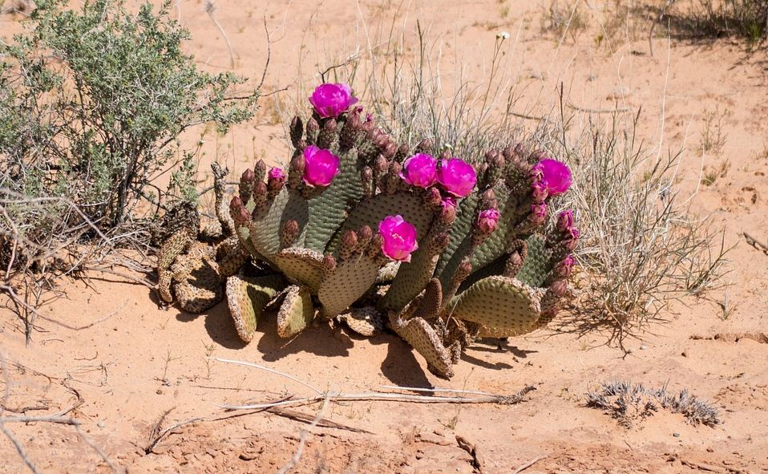
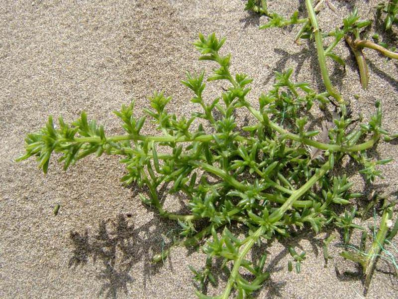
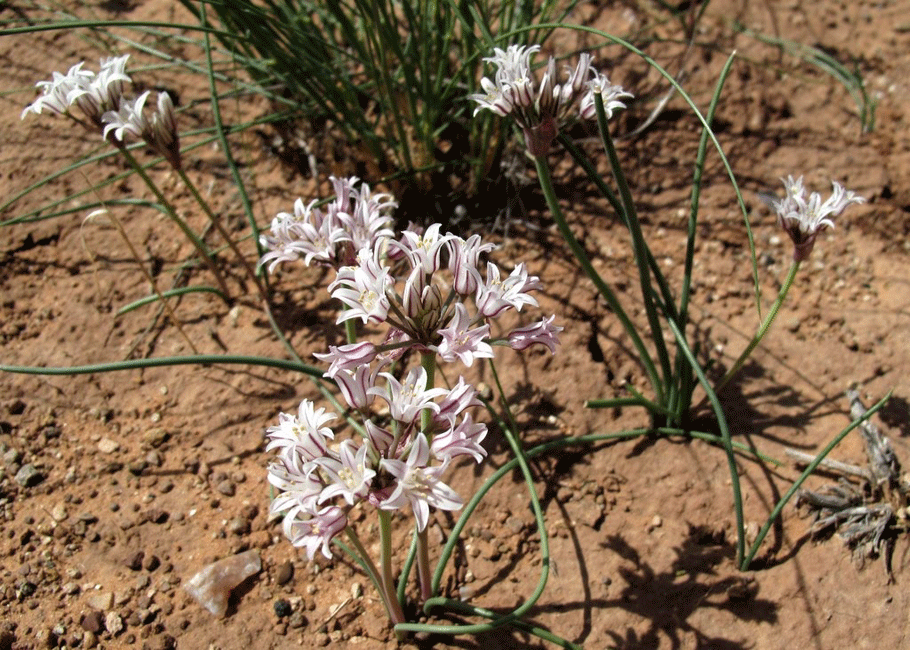

Góbi-sivatag
A Góbi Ázsia egyik nagy sivataga, Kína északi és Mongólia déli részén terül el. A sivatag kialakulását a
szeleket és így az esőfelhőket is felfogó Himalája okozta, gátolva a csapadékképződést, azaz
esőárnyék-sivatagnak is nevezhető. A Góbinak csak mintegy 3%-át képezik homoksivatagok, felszínét inkább a
végtelen sziklamezők, félsivatagok, kanyonok, „holdbéli” hegységek, rejtett sós tavak határozzák meg. A nem túl
távoli múltban dús növényzet, és gazdag állatvilág népesítette be ezt a tájat, amiről a világ legnagyobb
dinoszauruszásatásai, több ezer éves sziklarajzok és ősi települések maradványai tanúskodnak.
Az elsivatagosodást követően is meghatározó világtörténelmi események sora zajlott ezen a vidéken. Itt vonultak
végig a hunok kínai hadiútjai, erre haladtak a selyemút karavánjai, több fontos oázist érintve. A Mongol
Birodalom történetében is fontos szerepet játszott. A Góbiban több ezer éve élnek nomádok, akik megtanultak
alkalmazkodni a sivatag szélsőséges klímájához, a hatalmas napi hőingadozáshoz.
Számos magyar Közép-Ázsia kutató – többek között Kőrösi Csoma Sándor, Vámbéry Ármin és Stein Aurél – ezen a
vidéken vélte felfedezni őseink hazáját.
| 
Cactus
|

Saltwort
|

Wild Onions
|